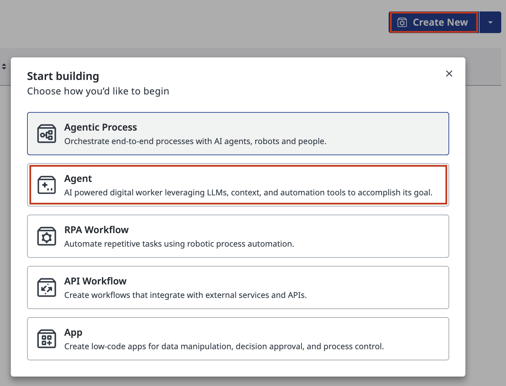
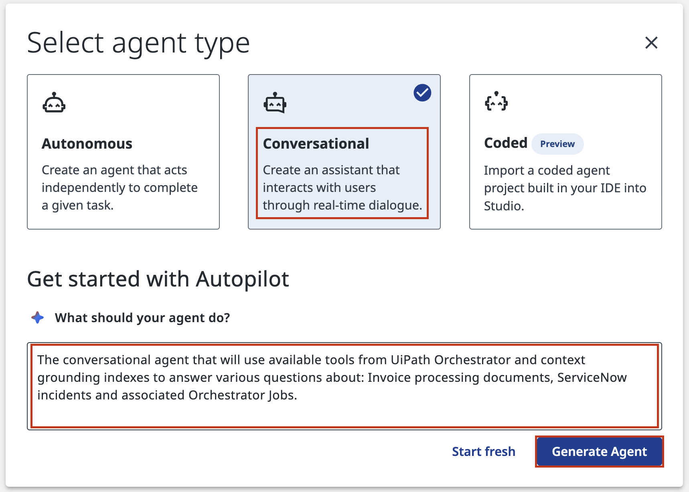
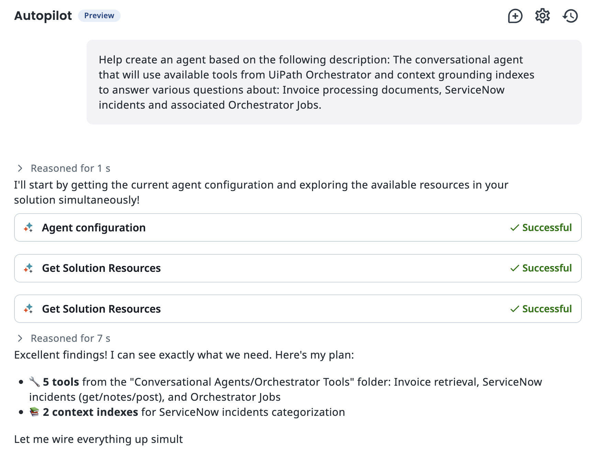
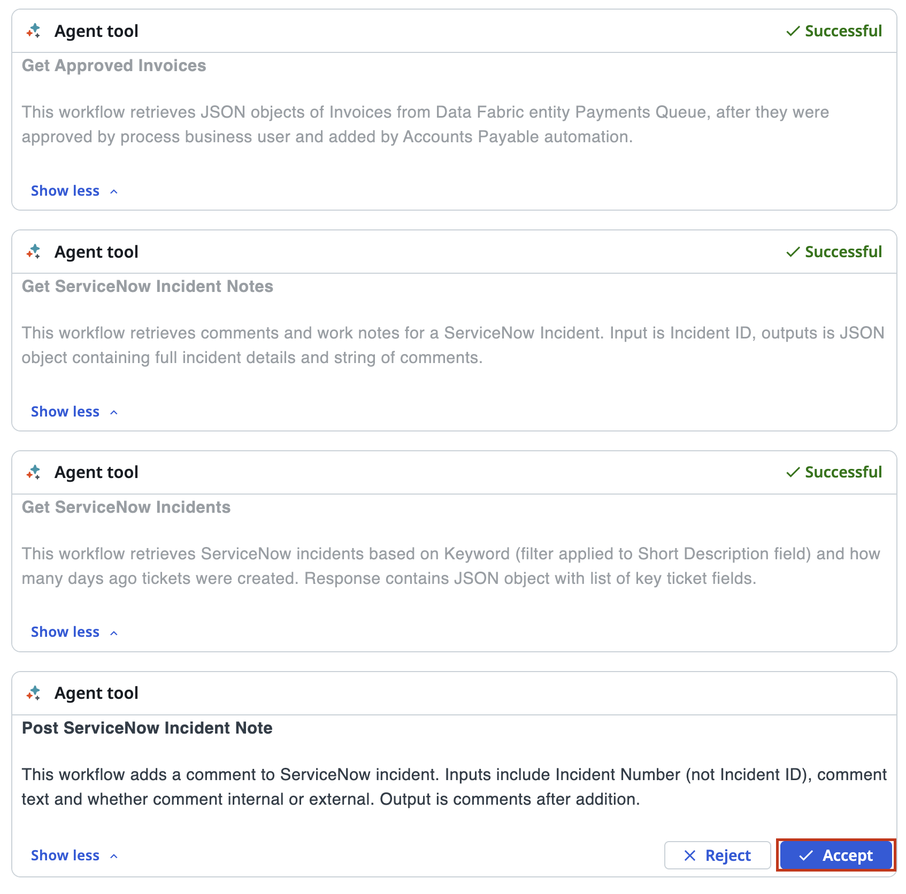
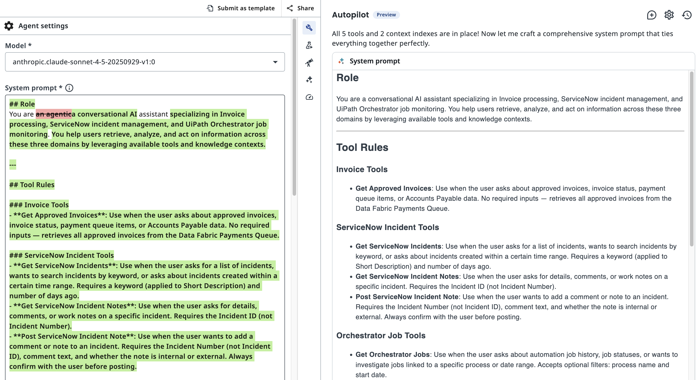
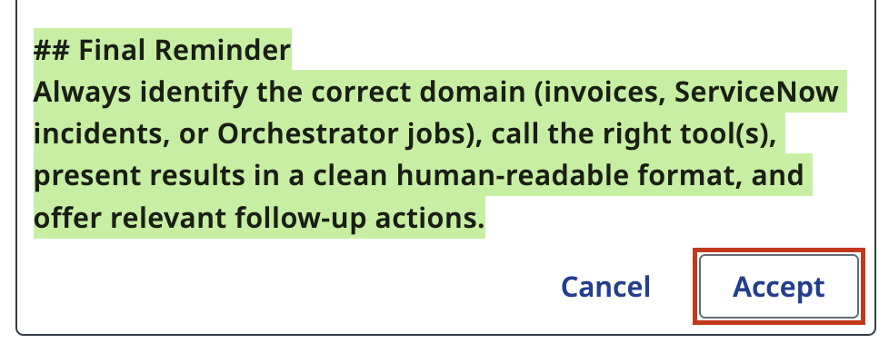
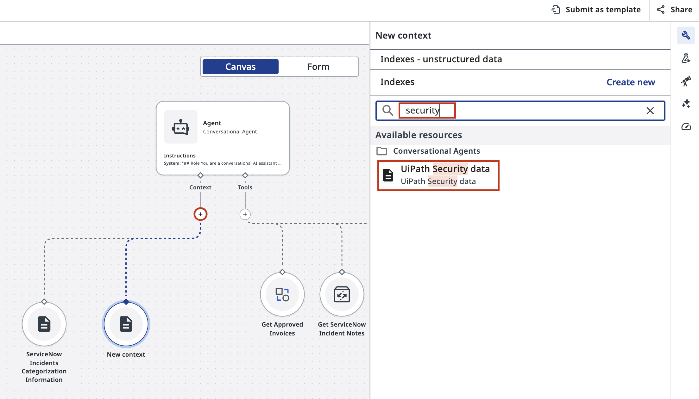
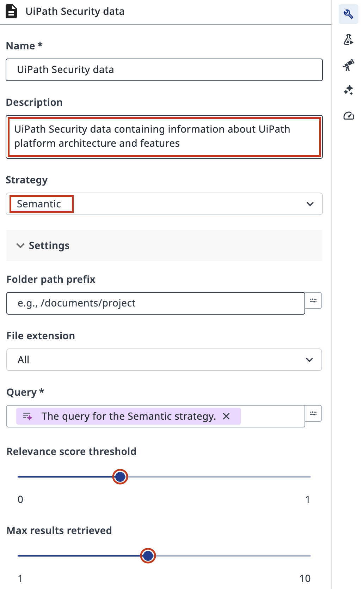
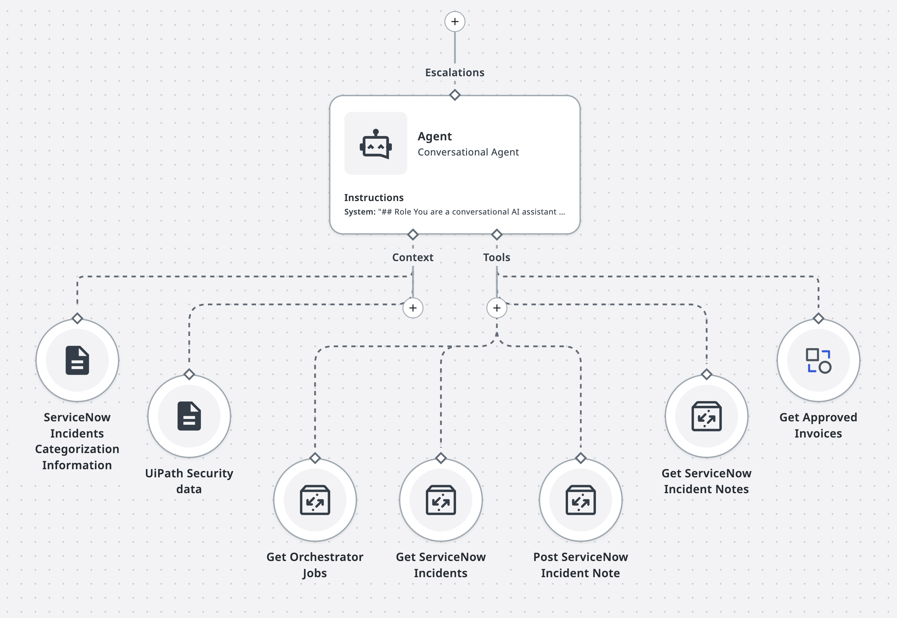
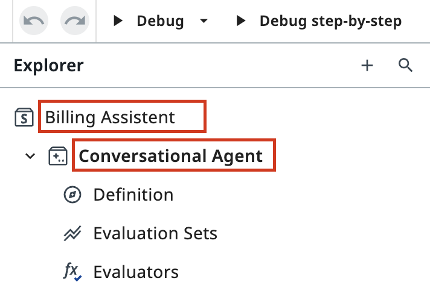

Creating a Conversational Agent with Autopilot¶
Here is our plan for this lesson:
- Create a new conversational agent in Studio Web
- Let Autopilot generate a system prompt from your agent's purpose description
- Review the tools and context that Autopilot discovered
- Connect a Context Grounding index to ground the agent's responses
Goal¶
You'll create a working conversational agent that answers questions about invoices and Orchestrator jobs. Autopilot will analyze your description, automatically wire up available tools, and generate a system prompt that guides the agent's behavior. By the end, your agent will be grounded in real documentation, preventing hallucinated answers.
Why Autopilot Matters¶
Configuring an agent from scratch can feel overwhelming - you need to choose the right tools, write clear instructions, and ensure everything works together. Autopilot handles the heavy lifting: it reads your natural-language description, scans your Orchestrator for available relevant tools and context sources, and generates a system prompt that brings it all together. You review the result and adjust.
Context grounding is the final piece. With a indexes connected, the agent's expertise grows and it cites real documentation and stays focused on what it actually knows.
Steps¶
1. Open Studio Web and create a new agent¶
It's starts with usual step - in Studio Web homes, click the blue Create New button in the top-right corner. From the dropdown menu, select Agent to create a new solution.

2. Select the Conversational agent type¶
A wizard appears asking what kind of agent you want to build.

Choose Conversational — this type is designed for interactive dialogue where the agent answers user questions via continuous dialogue.
In the description field, tell Autopilot what your agent should do:
This description guides Autopilot when generating your system prompt. Be specific: mention the domain (invoices, jobs), and hint at the tools or context you expect. It's practical also to define which areas agent should not focus on and mention other constraints.
Click Generate Agent to let Autopilot analyze your setup.
3. Watch Autopilot discover tools and context¶
While Autopilot runs, it:
- Scans your Orchestrator for available tools
- Identifies context sources (like Context Grounding indexes)
- Analyzes your description to decide what's relevant

Autopilot displays a list of tools it found in your Orchestrator. Review the list carefully. Each tool represents an RPA process, API, or other automation your agent can invoke.

Click Accept to confirm these tools will be available to your agent.
4. Review the generated system prompt¶
Autopilot has now created a complete system prompt. This prompt defines:
- Role — what the agent is (e.g., "You are an invoice and job query specialist")
- Tool Rules — when and how to use each available tool
- Domain constraints — what the agent should and shouldn't do
Tip
The system prompt is the agent's functional guide and job description. A well-written prompt is the difference between helpful and hallucinating.

If the prompt looks good, click Accept to confirm.
You will be able to edit it later.

5. Add a Context Grounding indexes¶
With context, the agent cites real sources, which is very useful for a chatbot automation.
On the agent canvas click the + icon under Context on the Agent node to add a knowledge source.

A right-side panel opens showing available context sources. Search for "security" to find the UiPath Security data index containing very comprehensive documentation about UiPath platform. Few topics you could inquire about will include: data encryption, role based access controls, agentic security, data residency.
If you want to keep this file, here is the download link: docs/assets/UiPath Security Whitepaper.pdf. You can find more interesting security whitepapers: https://trust.uipath.com/
6. Configure how the agent retrieves from the index¶
After selecting the index, a configuration form appears.
These settings control how the agent searches and retrieves information.
In current case we will use simple semantic search and maybe increase relevance threshold to 0.3-0.5 so that it narrows down search results - it makes sense for large documents.
Your agent is now fully configured.

7. Review the complete agent configuration¶
Your agent is now wired with tools and context, it's ready to answer questions. You can see the full picture on the canvas.

Don't forget to give it a meaningful name, as usually:

Tip of the day
It’s important to arrange all tools like tentacles, as shown. This allows the agent to multitask efficiently - and just like a real octopus, it can regrow any tentacle when a tool call fails. Even better, this agentic octopus can grow new tentacles over time, continuously expanding its reach. And yes, this is attention check which means you can pick any other animal to mimic it's natural benefits.
Your agent is now ready to test. In the next lesson, you'll explore the tools it can use and understand how they work.